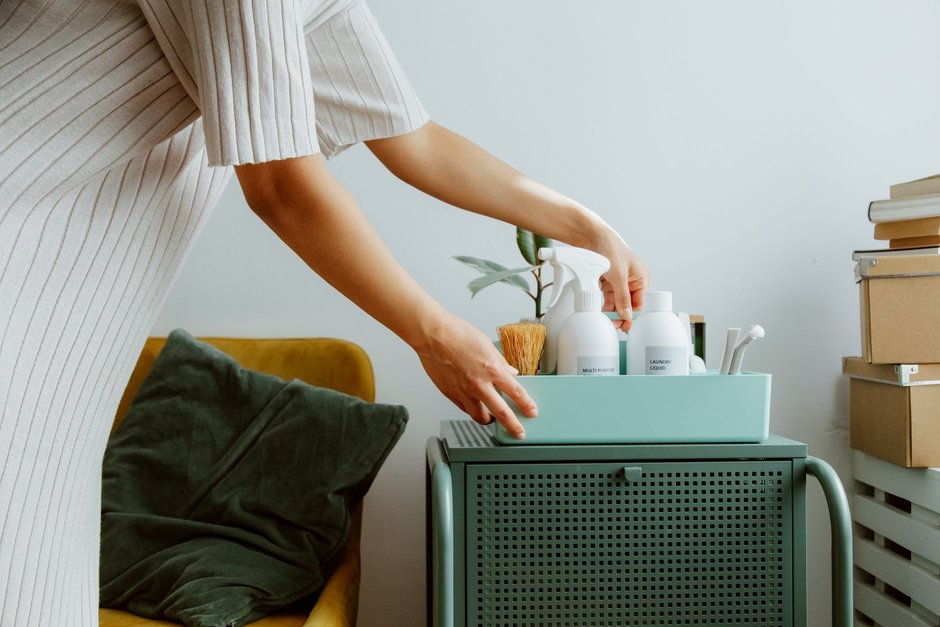

5 Pasos para optimizar el espacio con estanterías móviles
Las estanterías móviles son un aliado fantástico para aquellos espacios pequeños y desordenados. No solo ayudan a organizar los objetos, sino que también permiten un uso más eficiente del espacio. En este artículo, te explicaremos cómo utilizar estas estanterías de manera efectiva para maximizar el espacio en tu hogar o oficina.

Photo: Max Vakhtbovych / Pexels
1. Medida adecuada de la estantería
Para que las estanterías móviles sean útiles, deben ajustarse a la medida del espacio disponible. Si planeas instalar una en tu sala de estar, mide primero el espacio. Un ejemplo: si tienes una sala de estar de 3 metros de ancho, opta por una estantería de 2.4 metros. Esto permitirá que los muebles y los espacios de tránsito no se vean afectados.
2. Distribución estratégica
La distribución de las estanterías es clave para aprovechar al máximo el espacio. Colocarlas en áreas donde hay más desorden, como en el living o en el dormitorio, puede ser muy efectivo. Por ejemplo, en la sala de estar, puedes colocar una estantería cerca de la chimenea o cerca del televisor, donde puedas guardar libros, revistas y pequeños objetos decorativos.
3. Utilizar correctamente el espacio vertical
Las estanterías móviles no solo se utilizan para almacenar objetos en la parte inferior. También aprovechan al máximo el espacio vertical. Coloca objetos de uso frecuente en la parte superior de las estanterías y los menos utilizados en la parte inferior. Por ejemplo, en la cocina, puedes colocar los utensilios de cocina más utilizados en la parte superior y los menos utilizados en la parte inferior.
4. Organizar con bolsas y cestas
Para hacer que las estanterías móviles sean más funcionales, utiliza bolsas y cestas. Estos elementos pueden ayudarte a mantener el orden y a organizar los objetos de manera más eficiente. Por ejemplo, en la habitación de un niño, puedes colocar cestas de diferentes tamaños en la parte superior de la estantería para guardar juguetes y libros.
5. Mantener la estantería limpia y ordenada
Finalmente, es importante mantener la estantería en orden. No sólo para que sea agradable visualmente, sino también para que funcione de manera efectiva. Asigna un tiempo de 10 minutos al día para revisar y organizar los objetos en la estantería. Por ejemplo, puedes asignar este tiempo justo después de la cena, donde todos los miembros de la familia pueden participar en el proceso de organización.
Siguiendo estos cinco pasos, podrás optimizar el espacio con estanterías móviles y disfrutar de un hogar más ordenado y cómodo. Recuerda, la clave está en la planificación y la organización. ¡Feliz organización!